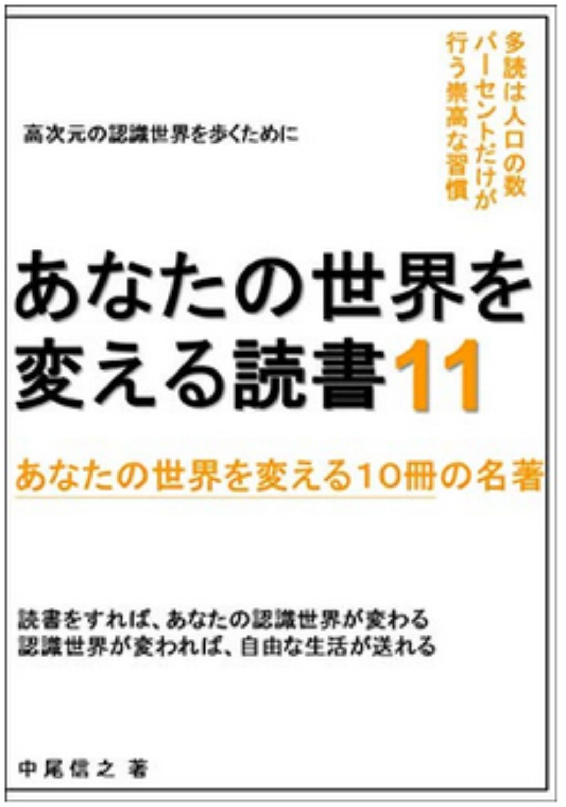

| あなたの世界を変える読書６ あなたの世界を変える１０冊の名著 あなたの世界を変える読書 あなたの世界を変える１０冊の名著 | |
| 中尾信之 | |
| (2018) | |
あなたの世界を変える読書６
あなたの世界を変える１０冊の名著
□はじめに
・自然なる帰結、自然なるプロセスとしての自由獲得
□第一章 生き方のヒントをくれる本
１．非学歴エリート 安井元康
２．すぐやる！「行動力」を高める"科学的な"方法 菅原洋平
３．「肩こり」から人生が変わる！ 金田かえで
□第二章 世界のとらえ方を変える本
４．黒本４ 高城剛
５．洗脳護身術 苫米地英人
６．世界史の極意 佐藤優
７．マイホーム価値革命 牧野知弘
□第三章 科学によって見方を変える本
８．国債は買ってはいけない！ 武田邦彦
９．９９．９％が誤用の抗生物質 岩田健太郎
１０．環境を知るとはどういうことか 流域思考のすすめ 養老孟司、岸由二
□おわりに
・圧倒的に、思考に広さと深さを組み込もう
あなたの世界を変える読書６
あなたの世界を変える１０冊の名著
□はじめに
・自然なる帰結、自然なるプロセスとしての自由獲得
本書はキンドルアンリミテッド読み放題対象の本の中から、優れた１０冊を紹介するシリーズの第６弾である。ここまでで既に５０冊の本を紹介してきた。
何度か記載をしている考え方であるが、ここで紹介している書籍の一冊ずつの知識が重要なだけではなく、複数の書籍の知識を重ねて吸収することで、知識のネットワークが広がり、自分の中で化学反応を起こしていることを感じて頂くことが、最も重要であると考えている。
そして、そのような状態に到達していくことが、自身の世界を認識する仕方を変え、私たちの行動が自然と変わっていくということを意図しているものである。
もちろん、その過程で、私たち自身が、自分の世界の「主役」であり、「創造主」であるという認識にたち、より良い世界を生き、より自由を実感しながら生活していけるようにすることが、私たちの読書の旅による自然の帰結であると考えている。
今回、ここで紹介する本の中でも、自分を偽わりながら無理をして、何かを目指すのではなく、自由に生きる自然な流れとして、あるべき姿に向かう、なりたい自分になっていくというプロセスを説明している書籍がいくつかある。世の中の成功本や、引き寄せ本が、概して成功者を生まないのは、その方法論の成功率が低いためであると思われる。それよりも、個人に、しっくりこないのは、自然ではない、なにか無理な努力や我慢をしいているからであると思われる。
本来は、より自然な流れの方法論こそが、人間という情報体にとって適切なのではないかということである。
そもそも、私が本書を書き始めた直接のきっかけは、過去の仕事の同僚に、私が多読を始めたことを伝えたところ、私のセレクトした書籍紹介を聞きたいという声を貰ったためである。それ以前に公開した電子書籍である「自分を生きる天職（転職）のすすめ ～１００％実力を表現する面接法～」は、私が今までに８つの組織に所属した経験から、どのように組織との関係をとらえ、どのように仕事を選ぶことが、自身の自由に繋がるかということを伝えたいと思い公開したものである。
二冊目の「はじめてのチームマネジメント ワンチーム・ビルダーを目指して」についても、過去の仕事仲間が３０歳未満であるにも関わらず、年上の部下を持つにあたって、アドバイスを求めてきてくれたことに対して記したものである。「アマゾン採用面接・対策マニュアル ～面接の秘境 アマゾンを越えて～」は、私がアマゾンの採用面接を何度も受けて、ようやく入社した後に、すぐ辞めた経験をもとに記載したものであるが、これもアマゾンに入りたいという過去の同僚の質問から生まれた書籍である。その他のものも、私の単純な興味から生まれたものもあるが、身近な方の声にこたえる形で生まれた書籍が複数存在している。まだ電子書籍を公開し始めて半年であるが、書籍数は、３３冊に到達した。
その中でも、「あなたの世界を変える読書 あなたの世界を変える１０冊の名著」を書くことは、私のライフワークのひとつになっているように思える。この１年ほどで、ある程度の多読をすることは、私の日常の行為となっており、そのインプットから、アウトプットをすることは、非常に自然な流れだからである。そして、このインプットからアウトプットをする際に、単に、一冊一冊を紹介するのではなく、私が今まで経験してきたことや、今までに読んできた他の本の情報、特に、このシリーズで紹介してきた全ての本の知識を統合することによって、新たな解釈を加えたり、私なりの思考実験をしたりということをしているのである。
そのような、私の頭の中の「情報の運動」とでも呼べることを、書籍にするために、白紙のワードファイルに言葉としておとしこむことで、自然に生み出されているのが、この「あなたの世界を変える読書」シリーズなのである。もし、アマゾンキンドルという出版方法がなかったとしても、私は、ブログなどで、書籍の要約と、自身の考えを公開してきたように、アウトプットを続けていたであろうと思う。
私がこのような文章を書いているのも、まさに、自然の帰結である。そして、結果としてのみならず、自然に生じているプロセスの一場面なのだと言えそうである。
ぜひ、あなたも自然なる帰結、自然なるプロセスとして、あなたの自由獲得につながるように、ともに面白い本に出会う旅に出かけてみようではありませんか。
私が、本シリーズで紹介した時点では、読み放題対象だった書籍が、その後、読み放題ではなくなっているものも出てきていますが、その点はご容赦を頂きたく思っています。そのような書籍については、私の推薦文を読むことで要点部分をご理解頂くか、興味を持たれた場合は、ご購入頂くか、その作者の他の読み放題書籍を手にとって頂ければと考えています。その点、ご了承頂きたく、よろしくお願いいたします。
□第一章 生き方のヒントをくれる本
１． 非学歴エリート 安井元康
本書は非常に明快な論理で展開されており、記述に一貫性があって読みやすい作品である。「努力は正しい方向でやるべき」というのが安井さんの考え方である。
私は、努力という響きがあまり好きではないので、ここでは「研鑽」という言葉を使いたいと思う。その方向性において、マジョリティ（普通の人間）が行う研鑽の方向と逆を行くべきだという指摘がある。これも非常に面白い指摘である。卓越した能力を発揮している人は、働く前か、働いている間のいずれかにおいて、もしくは、その両方において、普通の人と違うやり方で研鑽をしているはずだからである。そして、必要な研鑽を圧倒的にすることを「良し」としながら、不要なことには目もくれない。例えば、会社の飲み会というようなものには、いっさい行かないという考え方も、私と同じである。一見、積極的なような交流会などの意味のないものに出る必要もないというのである。これも、ここまで紹介してきた堀江貴文さんの書籍などでも指摘されていた内容である。
自分が研鑽をして能力を高めていけば、自ずと必要な人脈は、その必要に応じてできてくるからである。確かに、類は友を呼ぶで、高めていないもの同士が集まっても得るものは少ない。逆に、自分を高めていない状態で、分不相応な人に会えたとしても、対等な関係で話ができずに、単に会ったというだけの事実が残るだけになるはずである。また、必要な研鑽をするうえで、不要なことは、コントロールできない要素である、「過去」のことにエネルギーを使わないということである。
人生でもっとも限られた貴重な資源は、時間であり、１日は２４時間であるが、正しい方向性で、正しく研鑽をした人と、誤った方向性や方法で研鑽をした人の差は大きい。まったく何も研鑽をしなかった人との差はさらに大きい。そして研鑽を積み重ねてきた人は、目の前にあるチャンスを正確に認識して、それを自分でものにすることができるのだという。確かに、準備をしていなければ、チャンスを見つけることも、それに飛びつくこともできないのである。
安井さんは、有名ではない大学を卒業されているが、すでに大学時代から、自分の進む方向性を考えて、誰にも負けないような研鑽をされ、それを就職してからも継続し続けておられるのである。英語と、管理会計の力を鍛え、企業の上場を推進し、２０代で上場企業の役員になるという偉業を成し遂げたのである。安井さんの、この間の並々ならぬ研鑽を聞けば、その能力を持ってすれば、有名大学に入ることなど簡単だったに違いない。しかし、受験勉強に労力を費やさなくても、その後の研鑽で、いくらでも有名大学出身者に打ち勝つことは簡単にできるということを、彼の生き方は証明している。
私も同じく、有名ではない関西の小さな大学を卒業した。そして大学在籍中は、学校の勉強はしていたものの、それ以上の勉強はあまりしていなかった。もともと受験勉強に意味を感じなかったため、英語だけで受験でき、たまたま入学することができたのである。しかし、私の勉学は、大学が終わるあたりから、急激に始まった。まずは、受験勉強と同じように、就職活動に意味を見出せなかったために、また、社会政策などには強い興味があったため、公務員の世界に入ることにしたのである。
この際、大学で習った法律学や政治学の抽象的な知識は、細かいテクニカルな公務員試験には、まったく効果がなく、一度は全敗した。しかし、そのあと正しい研鑽をすることにより、国家２種と和歌山県庁に合格したのである。私に正しい研鑽の意味を分かりやすく教えてくれたのは、公務員試験勉強のために通った東京リーガルマインドの経営学の録画された授業である。そこで、孫氏の兵法にある「敵を知り、己を知れば１００戦危うからず」という言葉を知ったのである。良く準備されたコンテンツであれば、録画されたビデオの講座で十分なことも、この時、強く認識した。
他の本でも書いたが、公務員試験はいくら倍率が高くても、勉強をせずに受けている人間が多いため倍率には、あまり意味がない。自分が何割の点数を確実に取れる勉強をしているかということが問題なのである。受験をしている他の方々は敵ではない。受験科目の構成や、難易度などを知ることが敵を知ることである。己を知るということで言うなれば、自分の実力のどこが足りず、どこを効率よく補う必要があるかということを正しく認識することである。そうして強みを強化し、弱みを補った。そのためフルで受けると高額になる予備校で受ける講座も、弱点強化と、追加して学ぶ科目に絞り受講し、受講料をおさえながら、模擬テストを有効に使うことで、己を強化したのである。
そして公務員になる前から、読書をするようにして、広く本当に自分がやりたいことを探すことを始めた。その流れの中で、公務員には問題解決能力が足りないということを考え、公務員になる前から、次のアクションを準備し始めていた。県の部門で働いている間に、インターネットで海外留学をするということをトライしたのである。その後、２年で公務員を辞め、豪州へのワーキングホリディに行き、働いている間に取得したインターネット留学のＭＢＡコースの単位（南カルフォルニア大学）を持って豪州の大学院に入ったのである。しかし、そこでの勉学は、その前に、大前研一さんのＢＢＴの放送で見ていた日本人の行っている講座よりも著しくレベルが低かったため、１学期で辞めて、日本にとって返し民間で働くことにしたのである。そこから、複数の組織を経験し、現在は８つめの組織に所属している。私も、自分が納得できない研鑽はしたくない派である。
安井さんも二週間で会社を辞めたこともあるという。組織には所属しているが、組織に頼り切らずに、「個」としての研鑽を続けていれば、自分が活躍する組織を、自分が選ぶという選ぶ側になれるのである。パージされる側になるのではなく、パージする側になるということである。組織が個人より強いと考えるのが通例であるかもしれないが、パージする側になるのは、サイズがある方ではなく、意志を持っている側である。
組織に入るまでは、組織とマッチしているか完全には分からないのであるから、一度入ったうえで、即座に判断をすることは、時間の無益な投資をしないという考えに従えば、しごく当然の選択であると思える。たまたまマッチしない状態であっても、自分が主体的に柔軟に環境に対応できる選択権を持つということが大切なことであると思う。個の力を高めていれば、困難から成功につなげることができるし、環境を変えていく、もしくは選び変えることができるのである。
本書に書かれている「自分の人生を自分で定義する」や、「自分が主役で、他人はわき役」という安井さんの考え方は、このシリーズの第一弾から今まで紹介してきた、いろいろな本の内容と極めて高い親和性がある。石の上にも三年や、すし屋で何年も同じ作業を続けている職人見習いを否定する堀江貴文さんの考えとも、かさなるところが多かった。
２． すぐやる！「行動力」を高める"科学的な"方法 菅原洋平
この本が面白いのは、行動を変えるために無理をしたり、たいへんな努力をしたりしないでもいいように、上手く自分の脳に入れる情報をコントロールしていくということが書かれていることである。誰しも何か行動を変える際に、心理的なストレスなく、それが実行できればと思うことが多いはずである。
本の冒頭で記載されているように、例えば、普段は洗えているお皿が、どうしても洗うのが嫌になる時があったりというふうに、人間の脳（心）は、いつも同じ反応をしているわけでもなく、オンとオフの切り替えがオートで作動しているような状態になっているという。
確かに、やる気がある日と、やる気が、あまりない日があったりするのも、それと同じことであるように思える。特に大きな理由があったわけでもないのに、このような差が出てくるのである。
事故にあった方のリハビリを著者がされている中で、言葉で、「このようにするんですよ」と伝えるだけでは、できなくなった動作を回復することは難しい場合が良くあるという。そういう際に、他の人が同じ動作をしているのを見せると、リハビリを受けている人の脳のミラーニューロンが働いて、自分が動かしているような感覚を覚えて、そして動作を回復することがあるというのである。不思議な現象のように思われるが、人間の脳の中のネットワークの中を電気信号のようなものが走っていると考えると、事故でその動きがストップした部分に、もう一度、刺激を与えれば、その後、また電気信号が流れ始めると考えれば、理解しやすいのかもしれない。
事故にあった方のような極端な例ではなくても、例えば、老人ホームで、大皿に、料理を盛って出していた際は、自分でごはんを食べなかった方に、小皿で一品ごとに出すと、自分で料理を食べるようになったという例が掲載されていた。このように、情報の与え方を変えるということで、情報の受け手の行動が、努力なしで自然と変わるのであれば、そのような 情報の与え方を工夫していく のが、効率的なように思われる。
さて、実際に私たちが、これを実践していくには、どのようなことがあるだろうか。例えば手の届きやすいところに、漫画を置いておかないであるとか、テレビのリモコンを置いておかないであるとか、本書でも書かれていたように、気持ちを切り替えるために、こまめにパソコンのスイッチを切るということなどが考えられる。簡単にできることで、だらだらと作業をするのではなく、一度、気持ちをリセットしてから再スタートするような行動から、自分の脳に入る情報の入れ方を変えていくことができるのではないだろうか。
私もいつのころからかやっているのは、「しんどい」とか、「疲れた」という口癖をできるだけ言わないようにしている。そして、「たいへんやなあ」ということの代わりに、「面白いなあ」と言うようにしている。このようにセルフトークを変えているのである。
「面白いなあ」というのは、そんな、たいへんな状態になっているのが、不思議で笑えるなあということに切り替えているのである。仮に、癖で「ああ、しんどい」と言ってしまったとする。しかし、一度、冷静になって、「本当にしんどいのかな？」と、心で自問をして、そうでもないのに、つい言ってしまったという言葉であれば、自分で打ち消している。「そうでもないなあ。」「ちょっとだけかなあ」というふうにである。
このように、部屋に置いている物の配置や、自分の言葉など、自分がリラックスできるように、そして自分のやる気スイッチが上手く作動するように、仕向けていくことが肝要なのであると、改めて教えられた本であった。ぜひ、仕事場の環境も、自分で工夫してみたいものである。
３．「肩こり」から人生が変わる！ 金田かえで
同じ著書の別の本を読んでから、この本を読むことにした。結果として、こちらの本の方が好きだったので、今回紹介をさせて頂きたい。本書は、非常に読みやすい作品なので、すぐに読めてしまえると思う。しかも、これまで、「あなたの世界を変える読書 あなたの世界を変える１０冊の名著」のシリーズを読んできてくださった方であれば、本書に書かれていることで、耳なじみのあることが幾つかあったのではないだろうか。
例えば、呼吸への気の配り方を含めた自分の状態の見つめ方である。金田さんは、それを合気道の方法論から説明をしてくれているが、ヨガや瞑想にも通じる内容である。ここでは、自分の状態を正しくとらえて、それを良くしていこうとする考え方が見て取れる。
合気道の独特の言葉なのか、今回初めて聞いた言葉は、集中している状態ではなく、ある事象にひっぱられていて、周りが見えなくなっている状態を、「傾注」というそうである。ネット辞書で調べると、集中することと変わらない意味のように書かれているが、 「心の姿勢」を敏感に説明する合気道では、「集中」と「傾注」を分けている というのである。
「集中」は、周りが見えたうえで、注意をしている対象のことを良く見えている状態であり、「傾注」は、対象のことだけを見ていて、周りが見えてない状態のことを指すようである。そうすると、傾注状態では、対象は見ていても、周りが見えていないのだから、正しく反応できずに終わるということになるのは理解できそうである。前回、宮本武蔵の「五輪書」を紹介したが、やはり心の状態を書きしるした表現が多かった。
２．で紹介した「 すぐやる！「行動力」を高める"科学的な"方法 」でも、無理をするのではなく、脳に入る情報の見せ方を変える工夫が説かれていたが、金田さんの本でも、無理をしている自分の心を冷静に見つめて、体の声を聞けなくなっている状態を把握して、 自分の体の小さな声をきちんと拾えるようにすることの重要性 が説かれている。そうすることで、適時、きちんと休憩して体や頭を緩ませることをしていれば、重症の肩こりになる前に、少しずつ予防をしていけるのではないかということである。
また、シリーズ第三弾で「病気は才能 おのころ心平」という本を紹介したが、病気は発病していないにこしたことはないが、病気だけを悪者にするのではなくて、病気が何かを肩代わりしてくれていたり、メッセージを伝えようとしてくれていたりするというような考え方も、本書と通じるものがあると感じた。
私は時々、風邪をひいているが、たまに思うことがあるのは、風邪をひくことで、体が部分的に作り変えられたり修復したり、浄化したりしてくれているのではないだろうかということである。そして、ある程度の頻度で風邪のような小さな病気をしているがために、大病にかからずに済んでいるのではないかとさえ思うことがある。
対象だけにとらわれるのではなく、自分と対象を含めた環境（周り）も見えたうえで、止観（正しく見る）できることが、個別の事象にも、人生全体においても重要なことなのだと、今回も改めて再認識したしだいである。
□第二章 世界のとらえ方を変える本
４．黒本４ 高城剛
毎回定番の高城さんの本を今回も取り上げたい。白本、黒本は、高城さんの読者からの問いに、高城さんが答える形式をとっている本である。非常に、簡易な造りの内容であるが、普段、よそでは聞けないような内容が書かれているので、楽しめシリーズである。前回は、白本４を紹介したが、同じタイミングで黒本４もリリースされていた。今回の本の内容は、かなり興味深い内容が書かれているＱＡが多かった。
例えば、政権に食い込んでいった創価学会についての情報は、今回、特に興味分かかった。フランスは創価学会をカルト指定しており、アメリカ下院は、創価学会を危険な組織として指定をしているというのである。実際、現在のように力を持ってきた背景には、暴力団の力を利用しつつ、日蓮正宗との内ゲバに勝ったからだという情報が記載されている。これは、この抗争に関わった山口組系後藤組の元組長の後藤忠正さんが書かれた「憚りながら ( 宝島社文 庫) 」という本で、詳細が語られており、黒本４にも引用がされているので、参照頂きたい。実際、原子力爆弾や軍事力を、まったく抑制しなかったオバマ大統領や、お金もうけのために事実を湾曲して危機をあおったゴア副大統領がノーベル平和賞を取っていることから考えて、権力とお金があれば、ノーベル平和賞は取れるということが分かる。しかし、カルト認定されているような団体のトップに、世界的な賞を贈るのは、やめて頂きたいものである。
宗教にまつわる本もいくつか紹介してきたが、仮に、創価学会がカルトであるとして、それでは他の主流宗教の教義は、カルトではないのかと言われると、これも疑わしいと思う。キリスト教は最も、内部でも外部にも残酷なことを行ってきた歴史を持っているし、各宗教の教祖は万人の平等を説いているのに、形式化された宗教は、ほとんど階層性で、組織内部でも、外部者をも階層化して考えている。巨大宗教は、教祖を教えと反しているという矛盾を抱えて組織的な発展をしてきたのである。
高城さんは、日本の音楽シーンの衰退については、インターネットの影響よりも、９０年代のカラオケ文化と、２０００年代の握手会セールスの影響が大きいと指摘する。海外では、地域のラジオが、文化としての音楽を育む機能を果たしているが、日本の場合は、そこも違うのだという。私もラジオが好きだったが、どのラジオ局を聞いても、どの番組を聞いても、同じ曲ばかりが流されるようになってきた段階で、ラジオから遠ざかってしまった。そのタイミングがおそらくカラオケ文化が隆盛を誇って歌いやすい歌を、みなが同じように歌うという流行ができてきた時期だったのではないだろうか。握手会という新しいフィールドで売上を取っていくというやり方を考案し、構築した人の能力は素晴らしいものであると思うが、音楽の文化への影響で見れば、マイナスの影響だったと言われても仕方がないのかもしれない。
高城さんは、日本の自民党とマスコミと、反社会勢力の表示一体関係についても、毎回のように指摘されている。原発問題を生み育ててきた自民党が政権に居続けている状態だけを見ても、自浄作用など、まったく期待できないという。確かにその通りである。企業が使う電気代は、値下げ合戦で、どんどんと下がっているのに、電力会社は、その値下げの源泉を、一般市民に高い電力を払わせることで補っているのである。そのうえ、ほどほどの地震でも発電所は止まってしまうのだから、本当に日本の電力は安全だから高いのかという疑問が出てくる。
独占、寡占的に公共的サービスを運営する権利を認可されていながら、このような市民へのしわ寄せをするのは、どういうことだろうか。監督官庁が市民の立場で機能していないということである。さすが、計画停電をやってしまうだけのことはある。
日本の満員電車は異常である。あのような乗車状況で、運賃が下がらないのはどういうことだろうか。あの満員状態であれば、顧客満足は下がる一方なのである。いくらアナウンスが丁寧であっても、そんなことは焼け石に水である。駅舎の安全性を高めるのは、オリンピックをするからではなく、公益企業として寡占的な利益を受けて運営しているから、オリンピックが決まるより以前から、日常的に行うべきことなのである。順番がまったく逆なのである。
高城さんは、そのような状態を許している政治家については、 表面は国粋主義的な愛国者こそが、実は、拝金主義的な売国主義者であるという のが、政治家の怖いところであると指摘している。
現在の環境における、高城さんの生き方のアドバイスは、金融資産や、人の付き合いまで、分散するということである。それが、実際に破綻した国家や地域の中で、元気を保っている人の生き方であるという。日本という国の政府に対して期待をしている人は少ないと思うが、これからも自分のことは自分で考えて、リスクに対しても、日本政府に対しても、自己防衛をしていくことが重要であると改めて認識させられた。
５．洗脳護身術 苫米地英人
このシリーズでは、毎回紹介しているのが、苫米地さんの書籍である。苫米地さんの本の特徴は、難しい内容を可能な限り分かりやすく書いているところであり、学問的な書き方をしていないことである。ただし、「洗脳原論」、「認知科学への招待」と本書は、少し学問的な教科書のような文体で書かれている。
この次に紹介する佐藤さんの書籍では、ナショナリズムも資本主義も宗教のようなものであることが指摘されている。また、７冊目に紹介する本は、マイホーム信仰についての本であるが、マイホーム信仰もまた、宗教のようなものである。
私たちは幼いころから、国という考え方にしろ、マイホームにしろ、お金（資本主義）にしろ、社会や親、学校で教えられる情報から、物事を考えるフレームを自分に埋め込んで生活をしているが、それらの全てが適切というわけではないのである。マイホームについての考え方が、時代や環境に応じて変わるべきものであると同じように、資本主義や国家の在り方も、いままでも時代の変化におうじて変化し続けてきたのである。これからの社会のあり様というものや、私たちの生き方も、環境に応じた形で、柔軟に考えていく必要がある。
洗脳護身術は、自分の外部からの洗脳的操作に操られないための考え方や技術を教えてくれているものであるが、あからさまに外部の誰かからというものではなくても、前述のように社会から知らず知らずのうちに埋め込まれた常識のようなものも、私たちの考えを縛っているものであるから、それらのひとつひとつが本当に、自分が従うべき考えとして適切かどうかということを、時々に考えてみるべきであるように思われる。
過去に紹介した、「超瞑想法」などでも、逆複式呼吸のやり方について記載がされていたが、洗脳護身術の中で紹介されている事柄のうち、自分にあっていると思われた方法は、試して頂ければと考えている。
６． 世界史の極意 佐藤優
この書籍は、今回紹介する本の中でも、是非、読んで頂きたい一冊である。
佐藤さんの風貌が少し苦手で、今まで読むことをためらっていたのであるが、苫米地英人さんと、佐藤優さんの対談映像を見て、非常に深い知識をお持ちで、柔軟な考えを持ち、達観されている感じに共感が持て、本書を読んでみることにしたのである。
私たち日本人は、大河ドラマを含む多くの時代劇を見ているが、時代の流れを巨視的に見ることが非常に苦手である。私自身も、学校の歴史の教科書を見ることは非常に嫌いであった。時代の大きな流れや解釈をしていくのではなく、単語レベルの内容を、ランダムに暗記していくということに意味を見出せなかったからである。しかし、多くの書籍を読むようになって、歴史についても考えることが増えてきた。私たちは、戦後という時代の中を生きていて、戦争体験者が亡くなっていき、戦争を知らない世代が増えることが危ないのではないかということを耳にしている。
ところが、私はこの意見に反対である。なぜなら、戦争を体験した世代が、戦争を清算せず、世界の体制は継続していると思われるからである。
佐藤さんの書籍でも、 この時代は第一次世界体制から継続している という指摘がなされている。私も、その通りであると思う。経済体制としての金融資本主義、政治体制として戦争を拒否せず望む思考が含まれていることなどが、その継続性である。佐藤さんの書籍でも、私がこのシリーズで紹介したレーニンの帝国主義も紹介がされており、世界の経済と、政治の歴史が解説されている。また、ナショナリズムというものが、どのように生まれるかという３つの説も説明されている。このような概念も、私たちは、普段考えることがない事柄ではないだろうか。私たちは、日本人としてスポーツを応援すること以外でも、集団としての意識を持っている。これが、どのように生成されるのかということである。明治政府ができるまでは、日本というまとまりの意識は、この島の人間は持っていなかったのである。ナショナリズムは、上から定められてできるものと、何か事柄が起こってから、それに対するリアクションとして起こるものもある。すなわち、自然に必然的に起こっているわけではないのである。
私たちはグローバル化の社会を生きている。この社会は、世界が近くなりながら、みんなが近くなるだけではない点を認識する必要がある。佐藤さんの指摘によると、 「帝国主義の時代、グローバル化は国家の機能強化を促してきた」 ということである。確かに、グローバル化で国境の垣根が下がるだけではなく、過去と同じように経済ブロックが形成されようとしている。
経済と戦争に関する指摘でいうのならば、 「植民地を求めない帝国主義、全面戦争を行わない帝国主義」、「新・帝国主義は、経済の軍事化と結びつくことになります。」 という指摘である。私たちは、決して、過去のふたつの大戦と断絶した平和な世界を生きているわけではない。非常に不安定な要素をはらんだ、戦争を起こしてきた世界とつながっており、現在も、世界では戦争があふれている。
そして、佐藤さんの指摘するように、植民地化しないということは、人間が公平になったのではなく、単に植民地を維持する直接コストが高いという維持コストの選択の問題である。また、戦争についても、その規模を調整することで、継続可能な戦争をしているということなのである。このことは、帝国主義的な資本主義という、少し嫌な言葉で言い表せるのかもしれない。佐藤さんも、本書の冒頭で、戦争を回避するためという、非常に重要な大きな命題を掲げて、本を開始している。それだけ、差し迫った世界に私たちは生きているということである。
本書の終盤で佐藤さんは、鋭い指摘を行っている。資本主義も、ナショナリズムも宗教であると。そうすると、人間は、宗教と、資本主義と、ナショナリズムという、３つの宗教で、世界認識のフレームを作り、生きているということである。
宗教による戦争をしそうな場合は、ナショナリズムで国民を縛り、宗教で国が分裂しないようにする。ナショナリズムで国が分裂しそうな時は、宗教的統一で、国の分裂を阻止しようとする。正直、どちらも為政者による洗脳としか言えないように思うのは、私だけではないはずである。
さらに述べられている提案としては、「目に見えないものを大切にする」、相手を思いやる啓蒙思想のふたつが重要だとされている。これは、まったくその通りである。私たちは、宗教や、資本主義や、ナショナリズムを超えた、より大きな人間愛のようなものを、意識のベースにしなければ、競いあう、欲望をとめられない、戦争を起こしても良いという認識を許容し続けてしまうのであろう。
逆説的に、佐藤さんが言うように、社会主義体制というアンチテーゼがあったからこそ、資本主義は所得の再分配を行い、自身の潔白を証明しなければならなかったが、そのようなアンチテーゼが消えたのちの、資本主義は、過去の大戦と同じく、帝国主義的、資本主義という側面が強まっている傾向にありそうである。
ここにおける世界の制度的なプログラミングのバグを治すことは非常に困難かもしれないが、画期的な案を私たちの世代で考えたいものである。
７．マイホーム価値革命 牧野知弘
以前も、住居に関する書籍を紹介し、建設業界、不動産業界、金融業界、政府にだまされて高値の不動産をつかまされて後悔することがないように情報を共有させて頂いたが、今回の書籍はさらに分かりやすく住居に関する巨視的な動きを考えるヒントをくれる内容であった。
まず知るべきことを列挙するので、この情報を、皆様と一緒に、しっかりと噛みしめていきたいと思う。
１．２０２２年に、広大な生産緑地が、宅地として市場に出るために、地価は都市部で確実に下がることが予測されること。
２．既に人口減少傾向にある日本において、オフィスも住居も飽和状態であり、空家率は近いうちに（１０年もすると）３０％にも到達することが見込まれること。
３．このような値下げ要因が多い中、いまだに毎年９０万個という供給が追加されていること。
４．現在の値上がりは、不動産バブルという実際の家に住むための需要ではない実需に基づかない虚構の値上がりであること。あわせて、おもてなしで始めてしまったオリンピック虚構経済のせいで、建築資材や、建築に関する労働コストが上げられ、これが跳ね返った作られた値上がりであること。
５．現在は、ワンルームの生産過剰が加速されているが、今後、都心でリタイヤする世代のファミリー物件が大量に市場に出回ること。
これらの情報から、現在の地価、物件価格は明らかに過剰評価をされているのである。また、この状況を税制が、後押ししてしまっているという構造的な問題もある。
危険な古い住居を撤去したいなら、家屋がない空き地の税制を下げればいいものを、空き地にすると税金が高い状態になっているので、古い住居が放置される。また、土地持ちの少し裕福な家族は、空き地で高い税金を取られるより、また、高い相続税を取られるより、税金をゼロにすべく借金をしてでもマンションを建設しようとするようである。この時、不動産屋さんの利益なども鑑みると、ワンルームの方が、回収効率が良いということで都心にワンルームばかりあふれているというのである。
このことからも分かるように、 住宅業界全体が、実需用ではなく、供給者側の論理を色濃く残した業界 という指摘がされている。供給者は自分たちの儲かるように、自分たちのことだけを考えて需要を無視して過剰提供をするから、それらが売れるような広告をうち、今が買い時だと言い、借りるより資産にする方が得だという。ところが、本書で指摘されているように、扱いに困る住居が多いからこそ、相続の際に、住居が放置されることになっているのである。そして、相続税があるのが当たり前と私たちは思っているが、オーストラリアなどには相続税がない。そもそも、購入した際にも、維持している際にも税金を払っているのに、なぜ相続するだけで税金がかかるのか、これは三重課税になってしまっている。
今回特に面白かった指摘は、空家問題は、ずっと以前からあるということである。最初の空家問題は、都会に人口流入が始まったために起こった地方での空家問題である。そして、現在進行中の全国的な空家問題、この中で、都心に集中した人口を郊外に誘導したが、昨今の都心回帰の流れの中で、郊外の空家が増加しているということである。
もう一つ面白い事実は、数十年のうちに、ひとつの動きがあったとしても、それが揺り戻しされる可能性があるということである。たとえば、東京都中央区の５０年間の人口推移が記載されている。ここでは、 １９６４年から３０年をかけて、１９９７年に人口が半分以下に減少しているのである。ところが、そこから２０年で都心回帰がなされ、逆に２０１７年には、１９６４年の人口を上回っているのである。 ５０年の間に、逆流の動きが起こっている。私たちが小学校の時代に都心の人口が減っているということを教科書で読んだ頃は、都心に住む人口が減少傾向であったのであろうが、現在は、それとは異なった状態にあるのである。ひとつの流れの中にあっても、次の流れが発生する芽を見る必要があるということである。しかし、この中央区の空家率は今でも２７．７％と非常に高い状態にある。人が戻ってなお、これだけの余剰を抱えているのである。この先、実需が正常に、反映されれば、直近で地価が上がっていること自体、虚構であったことが分かるはずである。
あらゆるタイプの多くの住居が資産ではなく簡単に負債 になってしまう中で、タワーマンションを購入するリスクも丁寧に説明してくれている。タワーマンションは、非常にメンテナンスがしづらい構造物であるという。高層なために、足場の建設などが困難で外装のメンテナンスなども、時間も費用もかかる。その他の修繕も、積み立てが適切に行われていないと資金が不足する上に、住民の合意形成も困難である。もともと販売時点で見積もられていた修繕費用などは安く見積もられているから、のちのち住んでいくうちに修繕費用などがあがっていくという。このようなことを聞くと、まったく良いようには思えない。
現在は、一般の戸建て住宅が放置される状況が社会問題になっているが、タワーマンションの場合は、取り壊しが戸建てより比較にならないほど困難なため、何十年後かに大きな社会問題になりそうである。郊外のゴーストタウンと同じように、湾岸のゴーストタワーとして、３０年後には問題になるかもしれない。
しかも、タワーマンションなどは、まだ建物がない状態からモデルルームだけで販売をしている。これも普通に考えれば、人生で一番高い買い物をするというのに実物をみせずにイメージだけで売ってしまうという恐ろしいことであるように思えるが、普通は気にならないようである。
牧野さんも指摘しているように、普段は必要以上に物欲が高くなく、不要なものを購入しないような、３０代の世代でも、マイホーム信仰が強く残っているようである。
私たちは、不動産業界の宣伝文句に踊らされずに、ライフステージにあわせて時々に応じた、物件の選択を柔軟に考えていく必要がある。不動産価格が下落するのは、すぐ数年後のことなのである。なにもいそぐ必要はない。この数年急いでしまったために、買った瞬間から多額の負債に何十年も悩むという生活に陥ることは避けるにこしたことはないのである。本書では賢い、物件の購入例もいくつか紹介されており、これも参考になるものだった。読みやすい本であるので、ぜひ手にして頂きたい。
□第三章 科学によって見方を変える本
８．国債は買ってはいけない！ 武田邦彦
ここ数回、武田さんの本を紹介させて頂いてきたが、今回は今までの環境問題や、大麻の問題とは色合いが違い、経済の問題がテーマになった本である。本の冒頭は理解しづらい部分があるため、この解説だけで十分かもしれない。
なぜならば、私たちは、普段、テレビや新聞で聞く経済の解説とはまったく異なるからである。私はテレビでニュースを見ないし、新聞も読まない。２０年前に、大前研一さんは、「日経新聞」のことを「日本経済分からなくする新聞」と解説をしていた。事実を事実のまま伝えている記事は、情報として見るのはいいのかもしれないが、あの新聞に、深い洞察は期待できないということである。
まずもって認識すべきは、経済学は役に立たないということである。なぜならば、経済学は「完全情報」を前提としており、人間は「合理的な判断」をすることを前提としているからである。公務員試験のために、初めて経済学について学んだ最初の授業で、それは間違っていると私は気づいたために、経済学の勉強は、まったくバカバカしかった。
普通に考えれば分かる話である。世の中には、いろいろな情報があっても、それを人間が完全に把握することができない。どこに、いくらで、何が販売されているかなど、インターネットの時代になっても完全に把握することはできないし、人間はそれらを全て把握しようとはしない。また仮に完全情報を把握できても、絶対に、合理的な判断をするという保証はどこにもないのである。
このように経済学の前提である、「完全情報」、「合理的な判断」は、根本から誤っている。実際、経営学では、「完全情報」ではなく、「限定情報」を前提として、合理的な判断も、前提とされていない。
さらに、経済学が生まれた当時は、経済が国家ごとに閉じられていたが、現在は相互依存社会になっており、閉じられた経済を前提にした構造では、説明がつかないのである。経済学はまったく役に立たない所以である。もともと、経済学は、金融経済の嘘を隠すために生まれた学問だと苫米地英人さんは指摘している。そう言われれば納得である。従来の経済学が破綻し、人がどのように判断して経済環境に対応していくかという経済心理学が生まれてきたのは、そのためである。であるから、従来の道を生きている古い経済学者をブレーンに用いても、他国に搾取されるだけである。
一般に科学者は、自分の狭い領域に閉じこもり、後半な知識を統合している学者は少ない。ところが苫米地英人さんや、武田邦彦さんは、物理現象を科学的に解明する視点を持って、人間社会と、これを動かしている経済を分析しているので、嘘の経済学と違う見方ができるのである。お金は手段であって、目的ではない。お金を目的にしてしまったところから、現在の人間社会の不幸が始まっているのである。
武田さんの指摘で、面白いのは、年金の話である。日本の年金は「賦課方式」と「積立方式」の合併版でグレーな部分が多すぎるというのである。そもそも、破綻を前提に作られていると指摘されるぐらいダメな制度である。
「賦課方式」は税金のような形であるので、集めたものを、そのまま今、現在払うということである。それであるなら、現在、積みあがっている資金は、正しく配布されず、利権として積みあがっていると言える。徴収したものを、ためずに配布するのが効率的な「賦課方式」である。重要なことは、常に現状の経済体制では、だいたいにおいてインフレが発生しているから、今使わないと、価値が下がるということである。
「積み立て方式」であるならば、自分の積立額と、受取額がきちんと連携をしていないといけないが、基本的に連携していないため、若者何人で、老人何人を支えるという説明がされている。つまり、 賦課方式なのか、積み立て方式なのか曖昧なため、あまりにグレーすぎる ということなのである。積み立て方式であれば、物価上昇率を加味すれば、明らかに運営ができない。また、物価上昇率の計算の仕方も、政府の計算は血が通っていない計算であると指摘がされている。
ここで、考えなければいけないのは、ＧＤＰというものに縛られすぎないという考え方であると思う。武田さんが、物価上昇率や物価指数には、血が通っていない計算がされていると指摘したように、 総量としてのＧＤＰが個々の市民の豊かさを表していないということが一番の問題 であると、私は考えている。
株価と同じである。「１１９２作ろう鎌倉幕府」、こんな年号を覚えても、当時の庶民は、鎌倉幕府ができても、できなくても生活は変わらなかっただろうという武田さんの指摘している。「どんどん、上げようＧＤＰ？」
総量としてのＧＤＰがあがるだけで良いことがあるのだろうか。
ＧＤＰという形式数値に捕らわれているために、これを無理に上げようとする。数字を偽造するように、カンフル剤を打とうとする。そんな無理をして作った数字は虚構の数字でしかない。市民の作り出す付加価値の分しか社会は豊かにならず、市民の生活は改善されない。だから、それに関係がない、膨らまし粉である財政政策は毒だと、私は小学校の頃から考えてきた。
ＧＤＰをあげるために、みんなが毎日、必要以上の御飯を食べましょう、お腹いっぱいよりも食べましょうと言われて、食べているのが現在の経済の姿である。お腹に関わらず、必要以上の欲望を増やして満たしましょうというのである。それでは、いったい、どこで満足すれば良いのだろうか。数字に踊らされず、自分の自由な時間を過ごす、豊かさを感じられる時間を持つことが、幸せへの近道なのではないだろうか。
９．９９．９％が誤用の抗生物質 岩田健太郎
本シリーズでは、いろいろな医療に関する本を取り上げてきた。また、高城さんの書籍でも、最先端の予防医学についての記述が多々あるので、私たちはそれなりの知識を持ちつつあると思われる。本書も、本質的な医療の問題を提起している。若干、文章が読みにくいところ、細かい薬品名がでて読みにくい部分もあるが、現役の医師として、問題提起をしているところは勇気があることだと言える。
本題にあげられている抗生物質の使い方を多くは間違っているということであるが、それは結果であって、その原因となる問題が、医療業界にいくつか存在しているということが注目すべき部分であると思う。以下に、本書で書かれていた、問題をあげてみた。
①抗生物質含めた医薬品の研究と、認証プロセスで医薬品の効き目を正しく測定することは極めて難しいが、かなり適当に認証が行われている可能性が高い（時間経過による自然治癒なのか、医薬品の効果なのか判断できていない）
②そのため薬と薬効が曖昧なまま販売されている
③現場の医師は薬効が分からないまま、良かれと思って、多めに強めの薬を処方するが、その際、副作用については、あまり考えていない
④現場の医師の臨床能力がおおむね低いということ
⑤現場の医師の臨床能力が低いのは、それを高める教育をしていないから
⑥患者は、医者や薬を必要以上に頼りすぎる傾向がある
それぞれについて、私の考えを述べさせて頂くが、抗生物質についての詳細な記載は、岩田さんの本を手にとって頂けたらと考えている。
①抗生物質含めた医薬品の研究と、認証プロセスで医薬品の効き目を正しく測定することは極めて難しいが、かなり適当に認証が行われている可能性が高い（時間経過による自然治癒なのか、医薬品の効果なのか判断できていない）
このことは、岩田さんの本の中でも因果関係の誤解として取り上げられていた。私も、因果関係のとらえ方では、若いころに会社の中で、ある役員の方と議論をしたが、まったく相手が理解しないことがあり、今となっては笑い話ではあるが、非常に苦い経験をしたことがある。
たとえば、風邪が治ったとして、それは薬が効いたのか、寝ていて体力が回復し自然治癒で治ったのか、夜飲んだ温かい紅茶が良かったのか、母親の看病（気功的な癒し効果も含めて）が効いたのか何が、どれだけ回復に寄与したか、はっきりとは分からないということからきている。いろいろなことの複合的要因で、風邪は治ったが、薬は、まったく効かなかったのかもしれない。または、薬は、いくらかは効いたかもしれない。でも、この効いた部分が、本来の薬効として効いたのか、効く薬だと思って飲んだためのプラシーボ効果なのかも判別がつかない。このようなことが、研究段階でも、認証段階でも起こっているのではないかということである。因果関係の理解は極めて論理的で、難しい面もあるが、自然と切り分けられる部分もある。
分かりやすくいうと、なんらかの事象Ａと、次の事象Ｂが起こった場合、言えるのは、ＡＢには、相関関係があるということだけである。Ａが原因でＢになったと言えるためには、より直接的な特別な因果関係がなければならない。
この薬と効果の因果関係のことを考えていて思い出したのは、農薬と収穫高の関係である。自然農法を実践されていた福岡正信さんも、閉じられたスペースでの農薬の実験と、オープンな自然の中での農薬の効果は、まったく異なるということを説明しておられた。結果、ある農薬を使っても思ったほど効果は上がらないし、また農薬を減らしても、収穫が減る度合いも、農薬の仕様書に書かれている効果の数字よりは限定的になるということなのである。
また、因果関係の考え方としては、刑法で法的な責任を問うための因果関係も同じように、論理的に考えられなければならないものである。ある結果が起こったとしても、その結果を防ぐために行動する責任を持たない人には罪を問えないのである。
②薬と薬効が曖昧なまま販売されている
①で本当に効くかどうか分からないけれど、実験で相関関係はあったから効く薬とされ実際に販売がされたとする。しかし、もともと効果がないかもしれないのに認証された薬は、使用場面、使用方法が曖昧とならざるを得ない。薬の仕様書に書いている利用方法が信頼できないということかもしれない。これでは、何をもとにして医者は薬を選択すればよいのだろうか。非常に長期間利用して、医師自身が患者さんに長年処方し、効果を認めたものだけにすべきなのかもしれない。実際、岩田さんの本でも、新しい抗生物質ほど、リスクの検証が薄いという。ところがダメな日本の医師は、患者さんに効く薬かどうか、長年の利用でリスクが検証された薬より、製薬会社のＭＲが積極的に攻勢をかけてきた、しかも値段の高いものを興味本位で利用してしまうという。売上上位に、新製品が入って来る日本特有の現象は、かなり歪んでいると指摘されている。
③現場の医師は薬効が分からないまま、何も対応しないリスクを見て、多めに強めの薬を処方するが、その際、副作用については、あまり考えていない。
効果である正式な作用にも無頓着なら、副作用に無頓着になることも、容易に想像ができる。とりあえず薬をだせば、自分も心理的に安心し、患者さん側でも、薬を多めに貰うと安心するという奇妙な風習が成り立つ。
④現場の医師の臨床能力がおおむね低いということ
患者の様態を診て、話を聞きながら、目だけでは分からない様態や経過を把握したうえで、処方箋や改善策、予防策を考えるのではなく、対処療法が医療だと思ってしまっている。だからこそ、症状に柔軟に使い分けるのではなく、いつでも抗生物質というふうに、薬の処方に頼るのかもしれない。
⑤現場の医師の臨床能力が低いのは、それを高める教育をしていないから
薬のことが良く分からず、臨床能力が低いと言っても、正式に医師免許を持ち、必要な教育年数を経てきているのだから、医師になるための教育に構造的問題があることも推測できる。
⑥患者は、医者や薬を必要以上に頼りすぎである傾向がある
そして、医師や製薬会社だけが悪いのではなくて、そのような医師や、そのような製薬会社を受け入れ、そういう医師でも経営が成り立つほど、患者が殺到している状態にも問題がある。
おおむね岩田さんの記載している内容には納得ができるものが多い。一か所、手放しで賛同できずに、今も考えている部分は、「副作用があるのはいいが、それを理解したうえで、薬を利用する」というような言葉である。
副作用を覚悟しても、それを使わざるを得ない症状にだけ、効くと期待できる条件で、やもえず利用するという判断をするということなので、むやみやたりに、効かない条件でも利用する医者とは大きく違うことが分かる。しかし、ひっかかるのは、他の考え方として、副作用という言葉がおかしいという指摘があることである。正式な作用も、副作用もわけることができず、じつは副作用と呼んでいるものも、正式なその薬の作用だという指摘である。そう考えた場合、薬自体が、毒であり、その毒に頼るほど、リスクが高い状態にだけ、効くと思われる薬を、症状を見ながら利用していくという慎重な姿勢になるのではないかと思われる。
はてさて、私が帯状疱疹になった時の抗生物質は効いたのだろうか。自然治癒したのであろうか。それとも塗り薬が効いたのであろうか。それともプラシーボ効果であろうか。そのことは、いまだに謎であるが、本当に困ったときに医師に話を聞いてもらうだけでも、気持ちが助かるのは事実であるので、個人的に話が通じる医師を近くに持ちたいものである。
１０．環境を知るとはどういうことか 流域思考のすすめ 養老孟司、岸由二
シリーズ第四弾では、養老さんの対談「無知の 壁 : 「自分」について脳と仏教から考える」という本を紹介したが、今回は、環境に関して養老さんが対談されている本である。
地球温暖化による海水面の上昇は嘘であることを、シリーズで武田邦彦さんの本を紹介することで共有させて頂いてきたが、いまだにＷＷＦ（世界自然保護基金）は、氷の上できょとんとするシロクマの写真をネット広告に掲載し募金を呼び掛けている。私も、高校生時代は純粋であったので、ＷＷＦに募金をしていた。しかし、温暖化で氷は溶けない。溶けないのに、ＷＷＦに募金を集めたお金を何に利用しているのであろうか。
南極は大陸の上に氷がある。南極はマイナス５０度で、気温が数度上がると、南極周辺の氷が増えるようになると専門機関も公表しているという。ＩＰＣＣ第四次報告でも、南極の氷は変わっていないという報告になっているという。今後も温暖化すると、雪が増えて、氷が増えると言われている。また、北極は氷が浮いている状態であるので、氷が溶けても、アルキメデスの原理で、氷が溶けても水位はあがらないのである。
ＷＷＦの名誉総裁は、秋篠宮文仁親王殿下、会長は、德川恒孝。これでは、何かできるわけがないのである。まるで、公家から幕府をまかされているような、ありがたい体制であるが、いったい今は何時代なのかと思ってしまう。
彼らのサイトには、下記の文字が躍っている。
「ＷＷＦは、効果的な「排出量取引制度」の制度設計を提案し、大幅な削減を可能にする社会への変革を推進する活動に取り組んでいます。」 余計なお世話である。ヨーロッパ（一部の特権階級）は安全を盾にしながら、自分たちの利権になるような制度を先に作って、社会的コストをあげたり、自分たちの有利な状態を作ろうとする。しかも、それを各国の善人顔の組織でも推進していこうとしているのだろう。
排出量取引制度は、苫米地英人さんや、武田邦彦さんが指摘するように、環境を良くしない制度である。排出量は減らないが、先進国が発展途上国や、中国に排出費用を支払うという利権を生むだけの制度である。新しい資本主義の金もうけの種（たね）として、ヨーロッパが考え出した可笑しなルールの片棒を、環境保護団体が担いでいるのである。「排出量取引制度」について評論家の宮崎哲弥さんも、水道橋博士の番組で、「破天荒で、どうにでも扱える。うまみのある制度」であると指摘している。
さて、環境問題の大きな問題は、このような欺瞞に満ちているが、今回紹介する本は、もう少し足元の環境に、生活者としての人間が、どう向き合うかという問題について書かれていて、実際に、環境を保全し、改善してきた方の活動について知ることができる本である。
「良い環境」とは、どういうものであるかという問題がある。これは、私たち、「人間にとって」ということが、所与の前提になっていると、私は思う。人間が、暮らしやすい、コントロールしやすい、それでいて、自然であると感じられる、人間にとってバランスのとれた環境が、「良い環境」であると、私たちは考えているのである。たとえば、人間がいなくなった世界では、どのような状態になっても、大災害が起きても、それも自然の結果であると言える。
私は、中学校くらいまで、近くの河原で小さなウナギや、川魚や、手長エビを捕まえて過ごした。泥沼でザリガニを捕まえたり、池で鮒を釣ったりして、多くのお時間を楽しんだ。そういう楽しみを持ちえたことを、今でも幸せに感じている。今は都会で、都会の公園を楽しんでいる。東京都のほとんどの池がある公園には、ザリガニが生息している。最近、外来種を、徹底的に毛嫌いしている番組があり、面白いので見ているが、少し行き過ぎであるように思えてならない。
外来種が悪いというのであれば、人間の混血も良くないということになる。しかし、今の人間は、いろいろな紆余曲折を経て、各地に、いろいろな人種として存在しているはずだと思うのである。ある程度、豊かな自然体形があれば、外来種に簡単には負けないともいわれるように、一気に負けるような場合は、その環境が豊かではなく、隙間が多かったということではないだろうか。ミドリガメも、その番組で環境庁が非常に警戒していると言っていたが、自然環境の中で、ミドリガメと、人間とどちらが、環境負荷が多いだろうか。比べ物にならないと思う。彼らの意見では、鯉も金魚も外来種になるので、ミドリガメを徹底的に排除するというなら、鯉や金魚も排除しなければ、話が通らないが、鯉は池の持ち主が置いておいてというから、そのままにしますというのである。要するに、ここでも人間が判断しているということである。環境省とは、妥協の産物でしかない。庁から格上げされて何か変わったことがあるのだろうか。スポーツ庁という要らない庁まで作ってしまうのだから、日本は本当に財政難なのだろうかと思ってしまう。
このように、「人間にとって良い環境」という前提でも、何を良しとするかということは、人間が決めている。人間にとって良い環境とは、①治水の意味で、大きな災害にならないような状態であるということ、②子供が人格形成するうえで、家族と楽しめる場所であるということ、③生物の多様性がある程度、保たれていて、人間以外の種の生存にも、良さそうである。という、この３点があるのではないだろうか。
本書では、環境にかんする施策が、地方公共団体ごとで区切れていると指摘されている。また、たまに言われるように、日本は、いまだに律令制度の頃の名残りや、江戸時代の名残りで、行政が区切られているとも言われるが、本書では、そうではなくて、流域単位で、良い環境を作っていくような試みが必要であると提案されている。
確かに、行政の単位の区切りは人間にとっても、土地にとっても、生き物にとっても最適化されているとは限らない。そうした場合に、コミュニティとは、一般的にかなり小さなエリアのつながりを意味することが多いと思われるが、流域を守っていく、流域の自然をより良くしていくということを考えた時は、より大きなエリアをひとつの共同体として、つないでいくことが必要になりそうである。そのような時に必要とされるのは、どのような思想と、どのような人であろうか。
□おわりに
・圧倒的に、思考に広さと深さを組み込もう
今回、ここで紹介する１０冊に出会うのには、いささか時間がかかった。以前も記載したが、アマゾンのデータマイニング機能が正しく働いていれば、もっと簡単に私は、１０冊を選択できるはずである。それは、私と同じように、キンドル読み放題を読まれている全ての人にとって同じ状況であると思われる。書籍量の拡大もそうであるが、情報量の拡大は、加速度的に増えていると言われており、多くの情報をキャッチアップすることの必要が叫ばれている。
しかし、私は、それらの多くはゴミ情報であると思う。ビッグデータ、ビッグデータと言われるが、これも、ゴミ情報がビッグであっても仕方がないのである。雑談の量が増えただけである。その雑談も自由意志からではなく、決められたフレームで考えられた疑似記憶から作られているものかもしれない。ますます大衆意思の操作性があがってしまうだけではないだろうか。
佐藤さんの指摘のように、私たちは、いまだに第一次世界大戦と陸続きの世界を生きているのである。情報の量が増えても、次元を飛びぬけた質の高い情報は、一部のずば抜けた天才や、異端児、変わった人からしか出てこないものであるのは、今も昔も同じである。たかだか、１００歳の人間が２０回生きたぐらいしか、西暦は続いていないのである。
知識はナレッジであるが、ゴミであるガベージを蓄えても仕方がないのである。これは、今回、歴史年表を英単語長で単語を覚えるような無意味さを指摘したことと同じである。ランダムな事象の呼び名自体は何の意味もなさない。なんの繋がりも生まない。
だからこそ、象徴的な事柄と、基本的な人類の歴史を、広い視野で、深い視野で巨視的に見ていくことが賢明であるように思われる。このようなことができるようになって初めて、苫米地さんが指摘するように、地面しか見ていなかったアリのような存在が、高さの視点を加えて、三次元で物事を理解する意識の飛躍ができるのであると思われる。
これからも、私たちは、読書の広大な広い海の中で、巨視的な視点を持った良本を探し求め、これからも知識のネットワークを広げ、深めていこうではありませんか。
本書を手にして頂き誠にありがとうございました。 中尾信之
本シリーズの最新作を書くたびに、第一弾を手にとって頂く方が多いように感じています。ありがとうございます。
□作品紹介

脳内ＯＳ ＦＯＲ ＨＵＭＡＮ ２０１９ ＶＥＲＳＩＯＮ
最新オペレーションシステムをインストールせよ！
https://www.amazon.co.jp/dp/B07N1T1TZF

自分を生きる天職（転職）のすすめ ～１００％実力を表現する面接法～
http://www.amazon.co.jp/dp/B07BD3K67Z

はじめてのチームマネジメント ワンチーム・ビルダーを目指して
https://www.amazon.co.jp/dp/ B07BJ98FTT

購買本部は本当に必要か スタッフ機能のあるべき姿を求めて
https://www.amazon.co.jp/dp/ B07BQ9BFDS

あなたの世界を変える読書 あなたの世界を変える１０冊の名著
https://www.amazon.co.jp/dp/ B07BT28HLV

あなたの世界を変える読書１１ あなたの世界を変える１０冊の名著
https://www.amazon.co.jp/dp/B07N4B2CXD

アニオタ革命 アニオタが世界を変える 銀河英雄伝説 神のみぞ知るセカイ から探る社会変革の可能性
https://www.amazon.co.jp/dp/B07CRQ3WWD

屋内植物園計画 小さなスペースで緑を楽しむ魔法
https://www.amazon.co.jp/dp/B07CWRK2CN

在庫管理の正解 在庫管理は、こんなに簡単だった
https://www.amazon.co.jp/dp/ B07GFS2YDN

新宿御苑の四季 写真集
Four seasons of Shinjuku Gyoen National Garden
https://www.amazon.co.jp/dp/ B07N83G4L5

吟遊物語集 吟遊詩人信